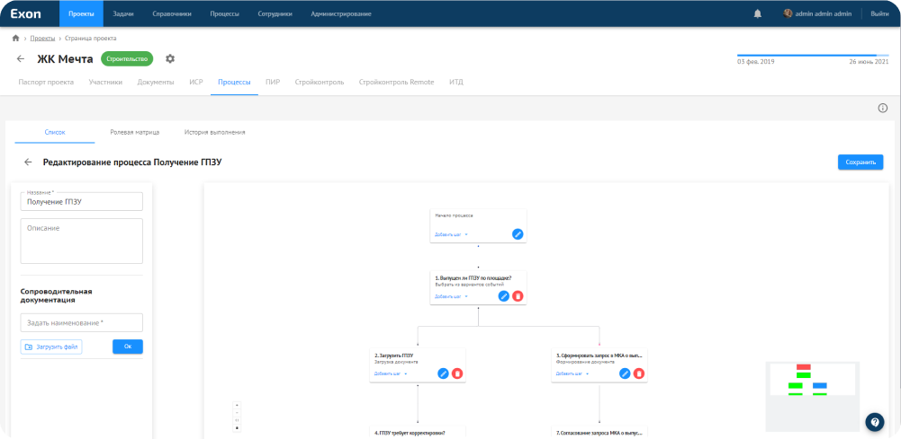

Модуль для самостоятельного выстраивания бизнес-процессов

Теперь
вы можете
- Создавать/редактировать/удалять бизнес-процессы на уровне организации или проекта.
- Настраивать последовательность выполнения шагов.
- Загружать необходимые для задач документы.
- Назначать исполнителей.
- Группировать процессы по папкам или блокам.
Модуль
автоматически
- Запускает новые процессы после завершения предшествующих задач.
- Сохраняет все документы, связанные с выполнением бизнес-процессов.
- Выбирает следующий шаг процесса из вариантов событий.
- Повторяет цикличные процессы.
Решения и возможности
- Формы для постановки ТЗ
- Прикрепление сопроводительных писем
- Формирование шаблонов
- Согласование документов с ЭЦП
- Ролевая матрица по проекту